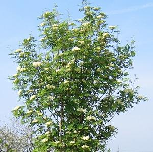

Wie wird die Vogelbeere genutzt?

Die Vogelbeere ist eine beliebte Zierpflanze.
Die Früchte einer Sorte, der Süßen Vogelbeere, werden zu Kompott, Gelee und Schnaps verarbeitet.
Die Früchte werden erst durch Kälte (Frost) süß. Sie enthalten viel Vitamin C.